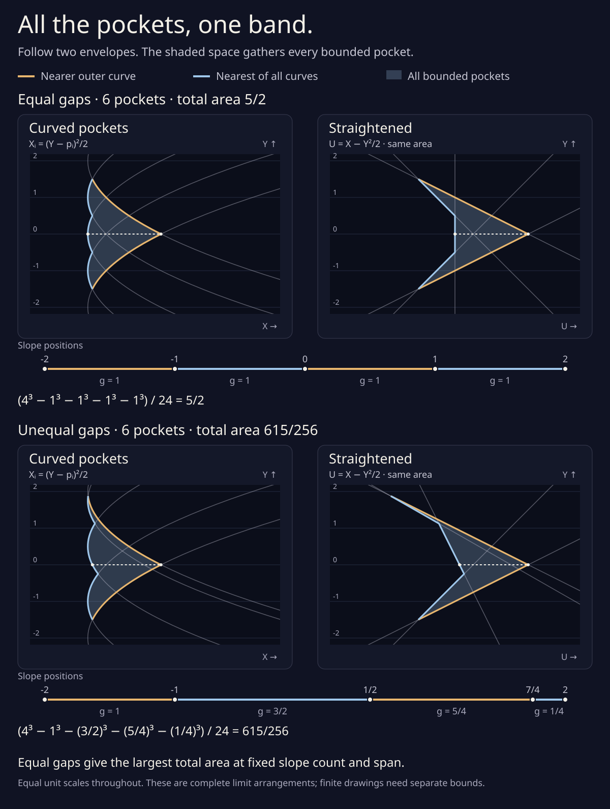
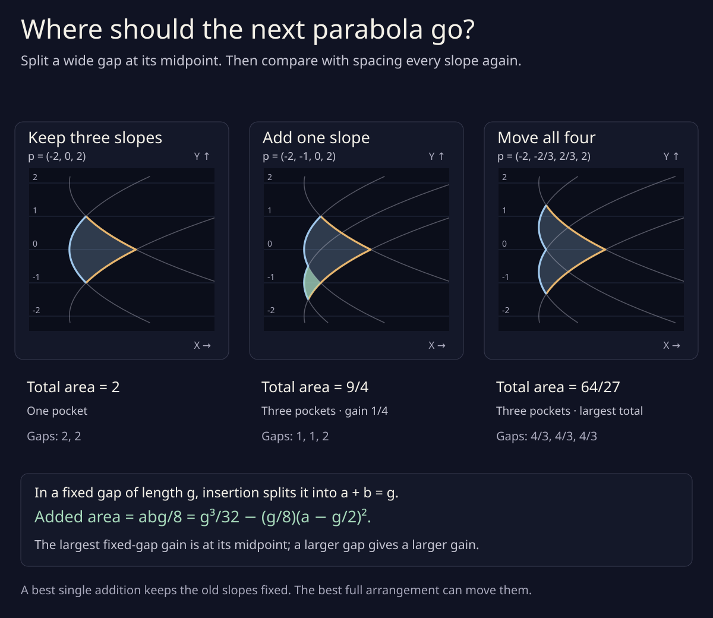
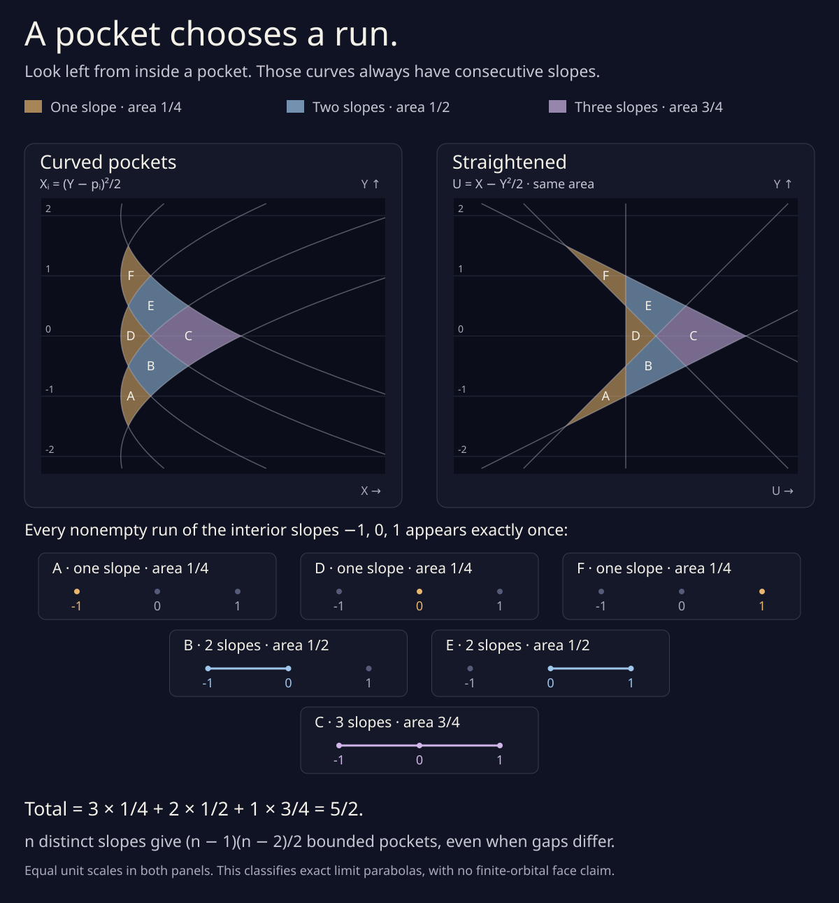
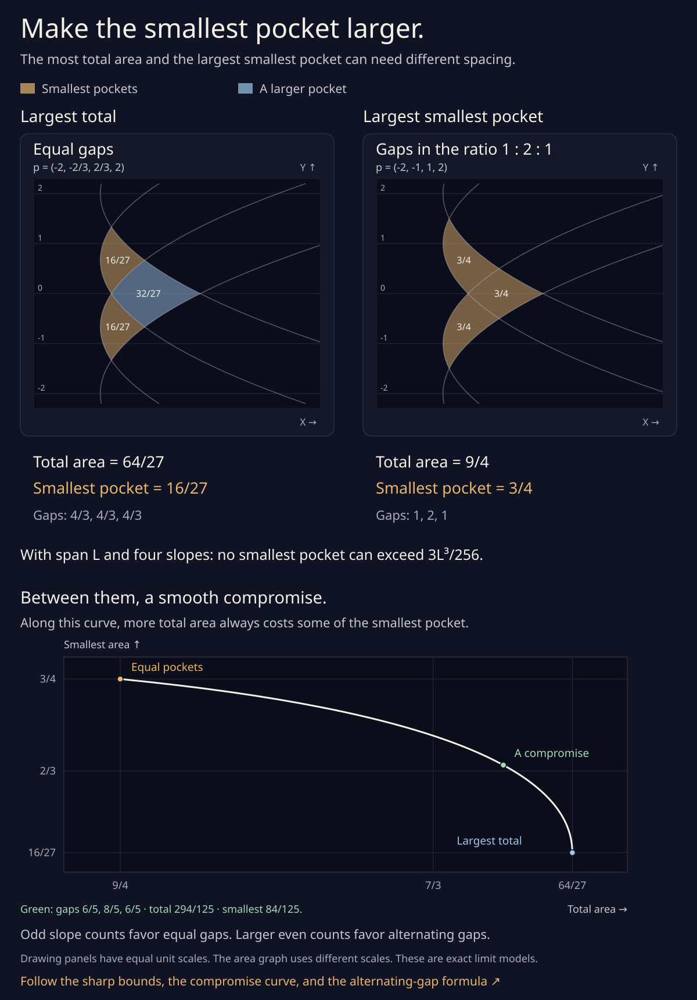

All the pockets,
one band.
Five parabolas leave six small spaces between them. Follow two edges to gather every pocket into one band. Then add a curve, give each pocket a name, and make the smallest one larger.
These are four still drawings. Each opens at full size and can be saved. Start with the parabolas that appear when magnifying a pocket between three moving branches, then explore what more curves can make.
Follow two edges.
At each height, the nearest parabola makes the blue edge. The nearer of the two outer parabolas makes the gold edge. Every bounded pocket lies in the shaded space between them.
Slide each horizontal row sideways by the same amount. The parabolas straighten into lines. No row changes width, so the total area stays the same. Equal gaps between slopes give the largest area; both pictured arrangements have six pockets.
Total area = (span³ − sum of gap cubes) / 24.

Put a new curve in a wide gap.
A new parabola brings part of the blue edge closer. The band grows by the green patch. Keep the old slopes fixed: the best place for one new curve is the midpoint of a widest gap.
That single choice need not give the best complete arrangement. Moving all four slopes to equal spacing makes a larger band than adding one curve while the other three stay put.

Give each pocket a name.
Stand inside a pocket and look horizontally to the left. The curves there have consecutive slopes. That run names your pocket: every nonempty run of interior slopes appears exactly once.
In this five-slope drawing, three pockets belong to one slope, two belong to a pair, and one belongs to all three interior slopes. Their areas are 1/4, 1/2, and 3/4 respectively. The letters let you follow each pocket through the horizontal slide.

Give the smallest pocket more room.
The widest band and the largest smallest pocket can need different spacing. Four equally spaced slopes give a maximum total area of 64/27, with smallest pockets of area 16/27. Gaps in the ratio 1:2:1 instead make all three pockets equal to 3/4.
For four slopes, no arrangement with those same outer slopes can make its smallest pocket larger. For odd slope counts, equal gaps do maximize both the total and the smallest area. Larger even counts favor alternating short and long gaps.
There is room between the two four-slope extremes. The graph follows every efficient compromise: along that curve, making either area larger means making the other smaller.

Where do these parabolas come from?
Near a meeting of three tangent-line graphs, move their original branches a long distance along their normals. Magnify the thin horizontal direction. The branches approach these parabolas. Each slope label comes from an original graph’s direction of change. The three-branch drawing and calculation explain this limit.
Here we extend that three-curve model to more chosen slopes.
The areas here are exact for the complete limit arrangements. A finite orbital drawing has corrections and may have other branches in the same place. Those need separate bounds. The finite-distance study follows one selected three-branch model.